A Boolean function is described by an algebraic expression consisting of binary variables, the constants 0 and 1, and the logic operation symbols 
For a given set of values of the binary variables involved, the boolean function can have a value of 0 or 1. For example, the boolean function 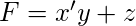 is defined in terms of three binary variables 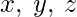. The function is equal to 1 if  and 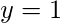 simultaneously or
and 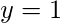 simultaneously or  .
.
Every boolean function can be expressed by an algebraic expression, such as one mentioned above, or in terms of a Truth Table. A function may be expressed through several algebraic expressions, on account of them being logically equivalent, but there is only one unique truth table for every function.
A Boolean function can be transformed from an algebraic expression into a circuit diagram composed of logic gates connected in a particular structure. Circuit diagram for 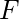–
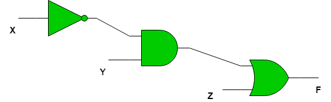
Canonical and Standard Forms –
Any binary variable can take one of two forms, 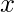 or 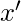. A boolean function can be expressed in terms of  binary variables. If all the binary variables are combined together using the AND operation, then there are a total of
binary variables. If all the binary variables are combined together using the AND operation, then there are a total of  combinations since each variable can take two forms.
combinations since each variable can take two forms.
Each of the combinations is called a minterm or standard product. A minterm is represented by 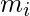 where 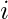 is the decimal equivalent of the binary number the minterm is designated.
Important Note – In a minterm, the binary variable is un-primed if the variable is 1 and it is primed if the variable is 0 i.e. if the minterm is 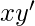 then that means 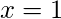 and  .
.
For example, for a boolean function in two variables the minterms are –

In a similar way, if the variables are combined together with OR operation, then the term obtained is called a maxterm or standard sum. A maxterm is represented by  where is the decimal equivalent of the binary number the maxterm is designated.
where is the decimal equivalent of the binary number the maxterm is designated.
Important Note – In a maxterm, the binary variable is un-primed if the variable is 0 and it is primed if the variable is 1 i.e. if the minterm is  then that means and .
then that means and .
For example, for a boolean function in two variables the minterms are –
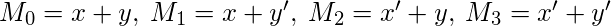
Minterms and Maxterms for function in 3 variables –
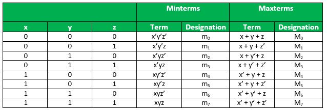
Relation between Minterms and Maxterms – Each minterm is the complement of it’s corresponding maxterm.
For example, for a boolean function in two variables –

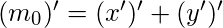
In general 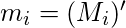 or 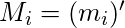
Constructing Boolean Functions – Now that we know what minterms and maxterms are, we can use them to construct boolean expressions.
“A Boolean function can be expressed algebraically from a given truth table by forming a minterm for each combination of the variables that produces a 1 in the function and then taking the OR of all those terms.”
For example, consider two functions  and
and  with the following truth tables –
with the following truth tables –

The function is 1 for the following combinations of – 001,100,111
The corresponding minterms are-  , 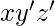, 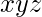.
, 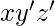, 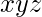.
Therefore the algebraic expression for is-
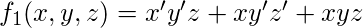
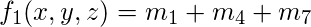
Similary, the algebraic expression for is-
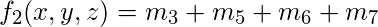
If we use De Morgans Law on and all 1’s become 0 and all 0’s become 1. Therefore we get-
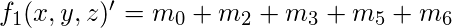
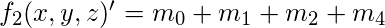
On using De Morgans Law again-


and

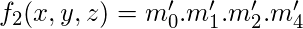
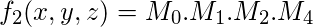
We can conclude from the above that boolean functions can be expressed as a sum of minterms or a product of maxterms.
“Boolean functions expressed as a sum of minterms or product of maxterms are said to be in canonical form.
- Example 1 – Express the following boolean expression in SOP and POS forms-
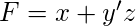 - Solution – The expression can be transformed into SOP form by adding missing variables in each term by multiplying by 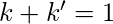 where 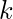 is the missing variable.
It follows from the fact that –
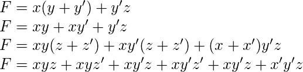
On rearranging the minterms in ascending order

If we want the POS form, we can double negate the SOP form as stated above to get-

The SOP and POS forms have a short notation of representation-

Standard Forms –
Canonical forms are basic forms obtained from the truth table of the function. These forms are usually not used to represent the function as they are cumbersome to write and it is preferable to represent the function in the least number of literals possible.
There are two types of standard forms –
- Sum of Products(SOP)- A boolean expression involving AND terms with one or more literals each, OR’ed together.
- Product of Sums(POS) A boolean expression involving OR terms with one or more literals each, AND’ed together, e.g.
SOP- 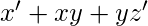 POS-

Note – The above expressions are not equivalent, they are just examples.
GATE CS Corner Questions
Practicing the following questions will help you test your knowledge. All questions have been asked in GATE in previous years or in GATE Mock Tests. It is highly recommended that you practice them.
1. GATE CS 2010, Question 6
2. GATE CS 2008, Question 7
3. GATE CS 2014 Set-1, Question 17
References-
Digital Design 5th Edition, by Morris Mano and Michael Ciletti